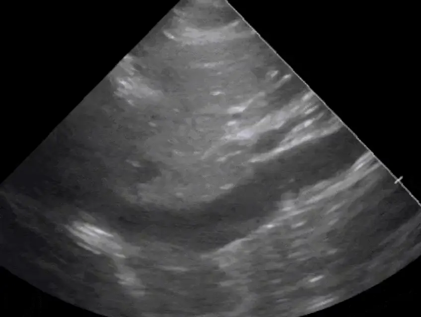

POCUS Tips › IVC
IVC and Filling PressureIVC
A gauge of right atrial pressure — useful at the extremes, easy to over-read, and never a fluid-responsiveness test on its own.
Open the interactive view with the loop and quiz →
Where to put the probe
- Window
- Subxiphoid, IVC in long axis as it enters the right atrium
- Marker
- Patient’s HEAD (12 o’clock)
- probe
- phased or curvilinear
- preset
- cardiac / abdominal
- depth
- 15–20 cm
Get the view
- Start from the subcostal four-chamber view, then rotate the marker to the patient’s head.
- Confirm it is the IVC, not the aorta: it enters the right atrium, has thin walls, and a hepatic vein joins it.
- Measure 1–2 cm caudal to the hepatic vein confluence, perpendicular to the vessel wall.
- Watch two full respiratory cycles, or run M-mode with a slow sweep to see the variation cleanly.
What you are looking at
- Inferior vena cava
- Thin-walled, non-pulsatile, changes caliber with respiration.
- IVC–right atrium junction
- Proves the vessel’s identity; the measurement is referenced from just below it.
- Hepatic vein confluence
- The landmark for where to measure — 1–2 cm distal to it.
- Aorta (do not confuse)
- Deeper, to the patient’s left, thick-walled and pulsatile, with no hepatic vein and no atrial connection.
Numbers that matter
| Diameter and collapse | Estimated RAP | Reading it |
|---|---|---|
| < 2.1 cm with > 50% collapsespontaneously breathing patient | ≈ 3 mmHg | low filling pressure — a fluid challenge is reasonable in shock |
| > 2.1 cm with < 50% collapsespontaneously breathing patient | ≈ 15 mmHg | high filling pressure — look for RV failure, tamponade, obstruction |
| Discordant findingsone criterion met, not the other | ≈ 8 mmHg | intermediate; the IVC is not going to decide this case |
| Virtually collapsed IVC in shockany respiratory phase | very low | strongly favors hypovolemic or distributive shock |
Don’t be fooled — pitfalls
- Aorta mistaken for IVCThe aorta is pulsatile, thick-walled, to the patient’s left, and never joins the right atrium. Follow the vessel before you measure.
- Off-axis measurement under-reads diameterThe IVC is a cylinder — a tangential plane makes it look narrow. Rotate until the walls are parallel and the lumen is at its widest.
- Positive pressure ventilation inverts the physiologyCollapse indices are validated in spontaneously breathing patients. On a ventilator, PEEP and tidal volume drive the number, not volume status.
- A sniff is not a breathForceful inspiration exaggerates collapse and will talk you into fluids the patient does not need.
- Plethora has non-cardiac causesTension pneumothorax, tamponade, raised intra-abdominal pressure, and simply being a young athlete all change the picture.
Bad image? Fix it
- Bowel gas blocks the windowSlide right and angle through more liver; the hepatic window is more reliable than the midline.
- Cannot find the vesselFind the right atrium first and follow it caudally — working backwards from the heart is faster than hunting a tube.
- Vessel drifts in and out of planeRotate a few degrees until both walls stay crisp through the whole respiratory cycle.
- Want a defensible numberM-mode through the measurement point with a slow sweep, then measure max and min on the frozen trace.
So what — what the finding changes
- Small collapsing IVC + shockGive a defined fluid bolus and rescan — the trend matters more than the single measurement.
- Plethoric IVC + B-linesStop fluids. Move to afterload reduction and diuresis as clinically appropriate.
- Plethoric IVC + clear lungs + dilated RVThink obstructive: PE, tamponade, tension pneumothorax. Look for each before giving volume.
Educational use only. Not for diagnosis or treatment decisions — confirm findings with formal imaging and your own judgment. By Yonathan Daniel, MD · About · Last reviewed 2026-09-15.